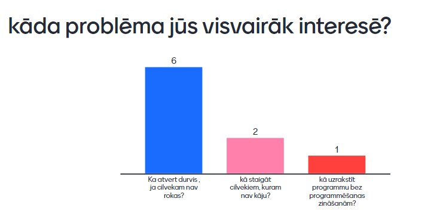

1)Lomu sadale starp komandas biedriem
2)Izdomāt 3 problēmas
3)Veikt aptauju
4)Uzrakstiet specifikāciju
5)Izveidojiet problēmu risināšanas programmu
6)Pārbaudiet programmu
7)Izveidojiet mājas lapu
8)Prezentējiet savu darbu
Daniils Sergejevs - programmetajs, izveido majaslapu, atrast problemu un pec tam izdoma risinajumu.
Nikita Vinogradovs - programmetajs, atrast problemu un pec tam izdoma risinajumu.
Dmitrijs Pilipisins - raksta specifikaciju, atrast problemu un pec tam izdoma risinajumu.
Maksims Solovjovs - raksta specifikaciju, atrast problemu un pec tam izdoma risinajumu.
Ka atvert durvi, ja cilvēkam nav rokas?
Pēc aptaujas noskaidrojām, ka cilvēkus visvairāk interesē 1 problēma un tagad paskaidrosim un parādīsim šīs problēmas risinājumu(Aptaujā piedalījās 11. klases skolēni)
Ir šāda problēma - cilvēkam nav roku, bet viņam joprojām ir tie paši ikdienas lūgumi kā parastajiem cilvēkiem: kā atvērt durvis, ja tās ir nevis vienkārši aizsegtas, bet aizvērtas, bet ne ar slēdzeni un nenolaižot durvis. rokturis tas neatvērsies - kā iziet no istabas?